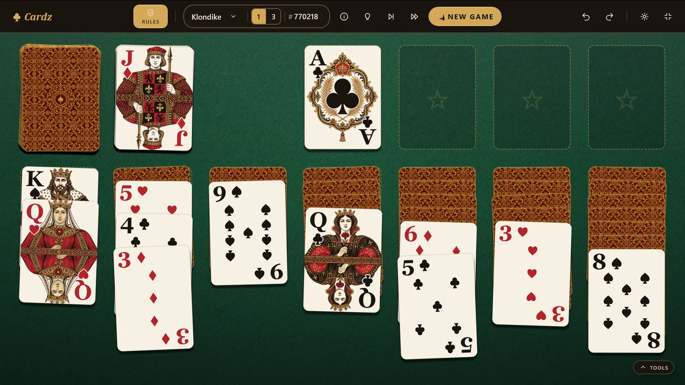
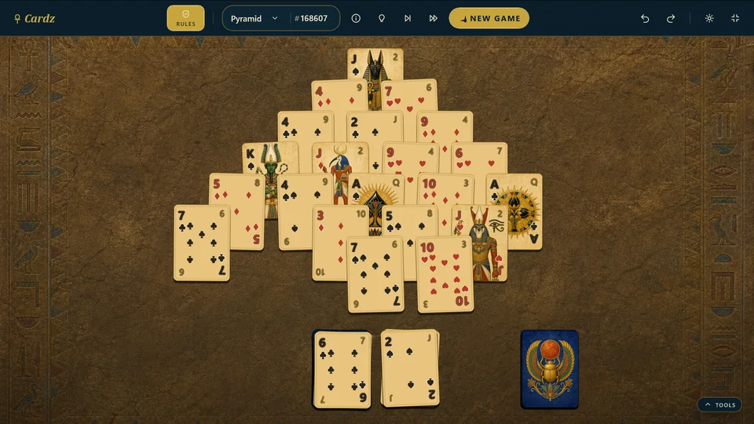
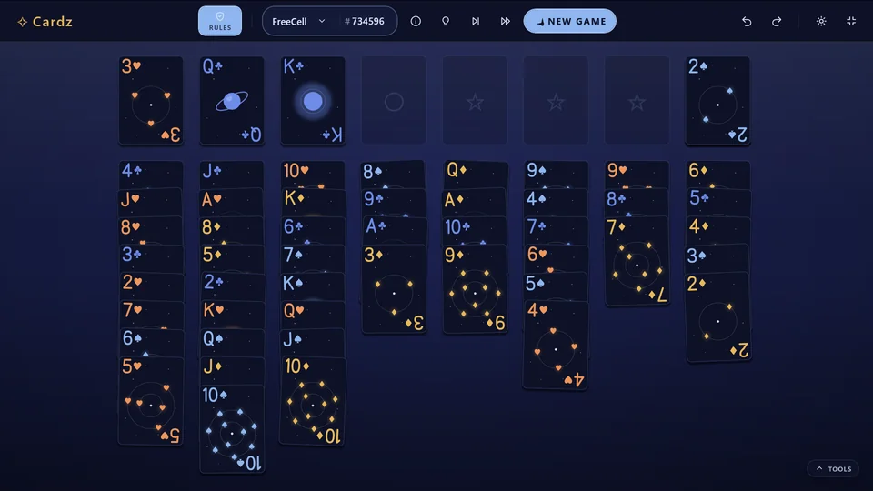
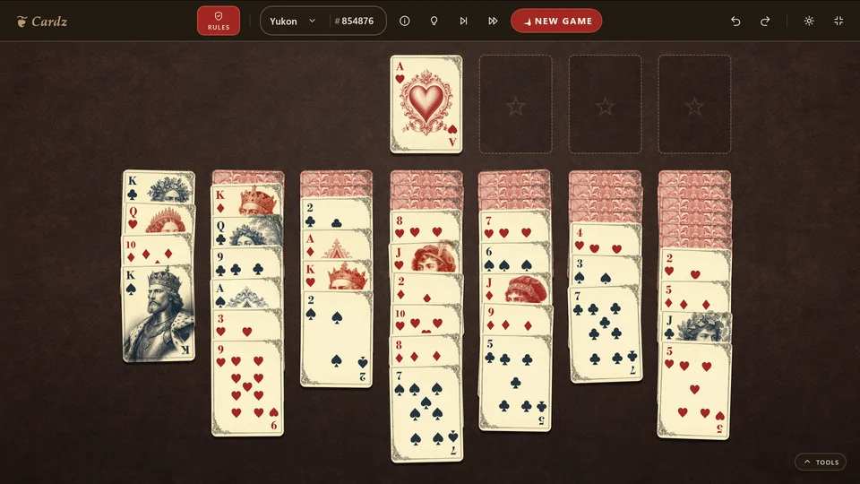
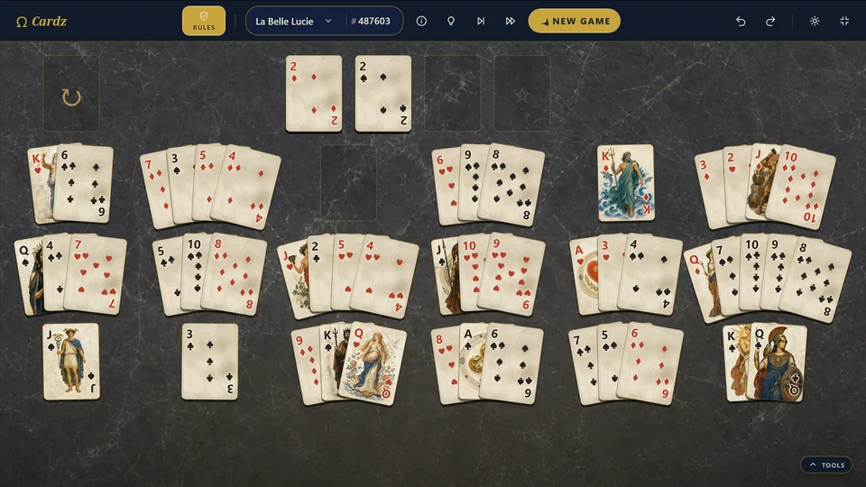
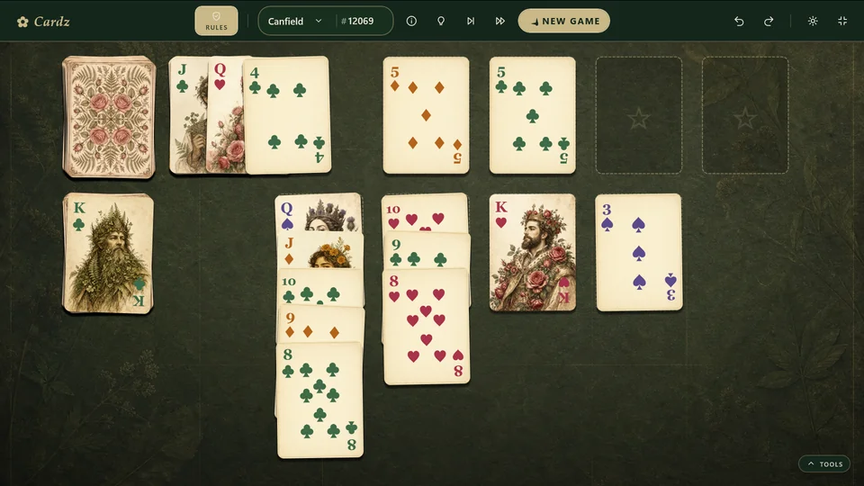
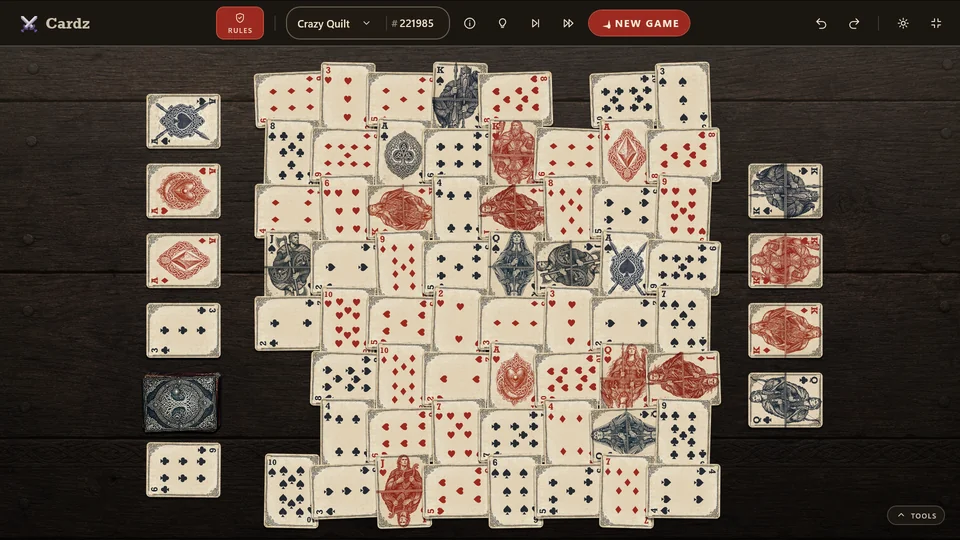
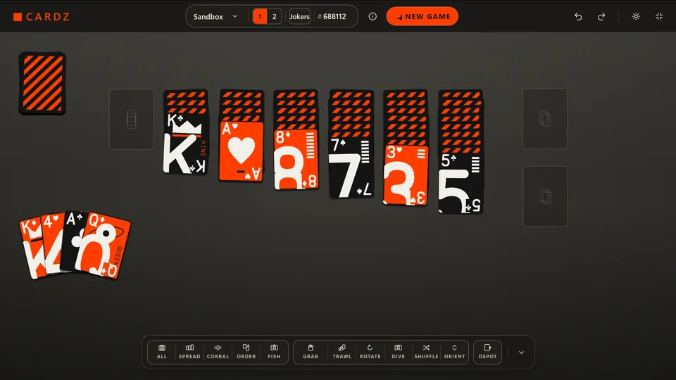

Any input
Touch, pen, mouse or keyboard.
Solitaire for Windows
Play the classics by the book, switch the rules off when you want to, or start from a bare deck and make up a game of your own.

Games

Pairs add up to thirteen
Scarab deck
Every card in plain sight
Deepfield deck
Move whole tails at once
Filigree deck
Eighteen fans, two redeals
Olympus deck
The first card sets the pace
Herbarium deck
Unpick the weave
Valhalla deckDecks
Switch at any time, even mid-game.
Sandbox
A table and a deck. Move cards anywhere and make up a game as you go.

Touch, pen, mouse or keyboard.
Close the app. Your game is there when you come back.
Stuck? Ask for one. Or switch the rules off and move any card.
High contrast, a colourblind-friendly deck, reduced motion, screen-reader narration and full keyboard play.